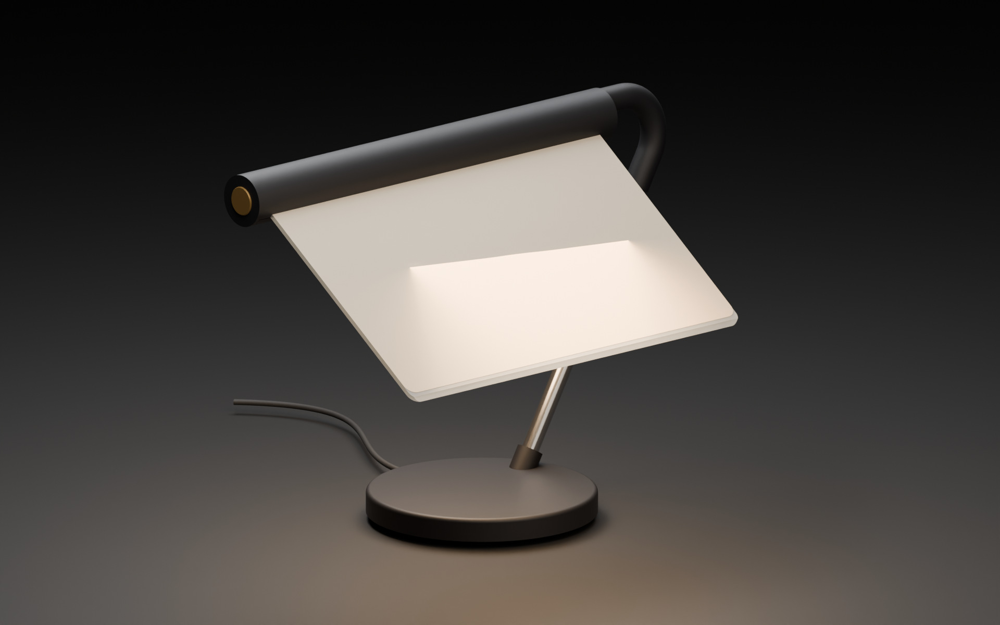
Industrial design study · Revision C
RUTA
Light held in a plane.
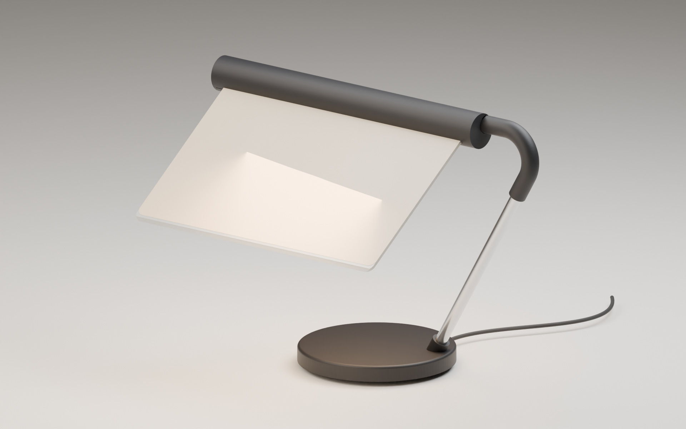
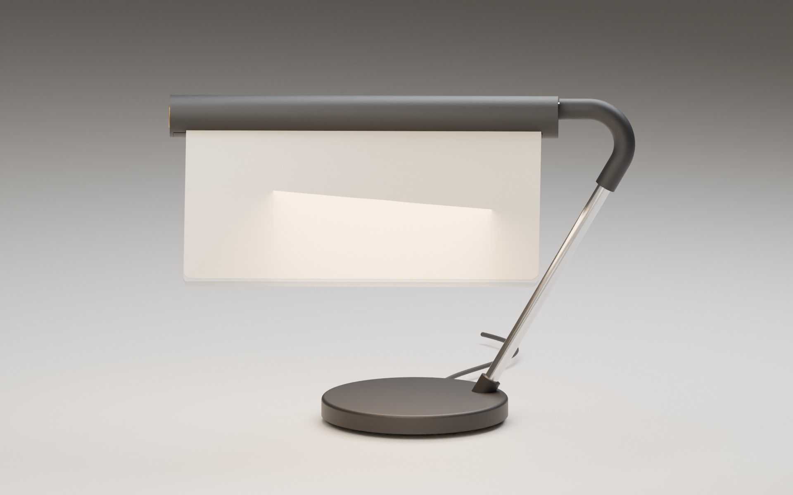
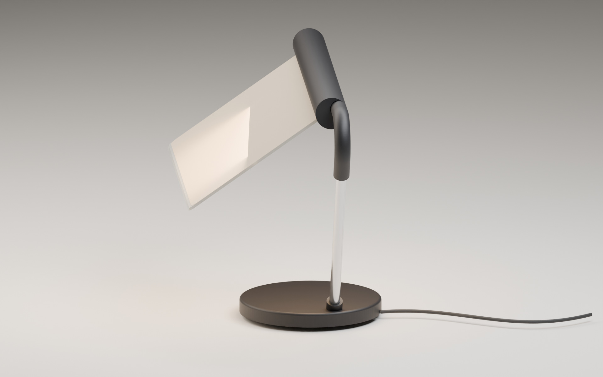
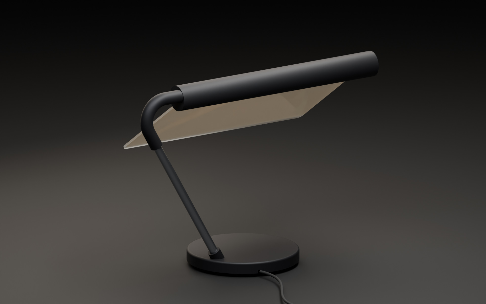
DESIGN INTENTION
The light becomes a surface. The structure steps aside.
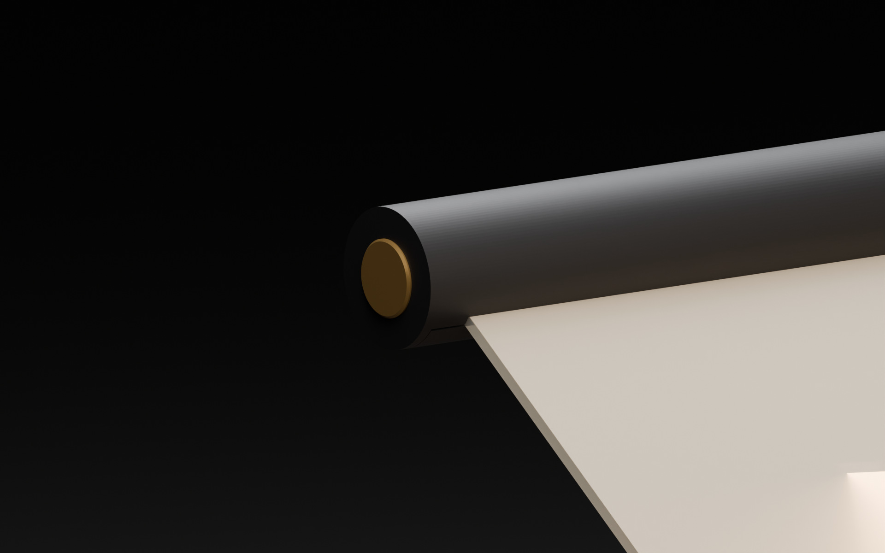
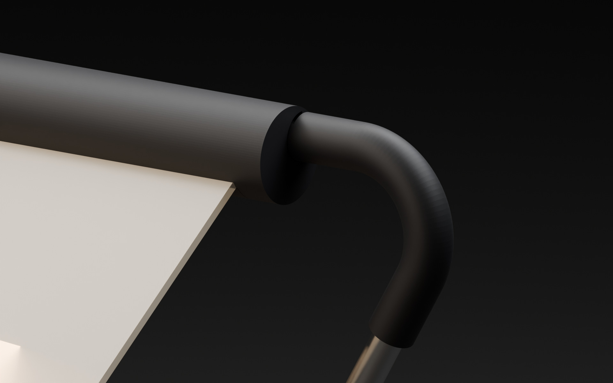
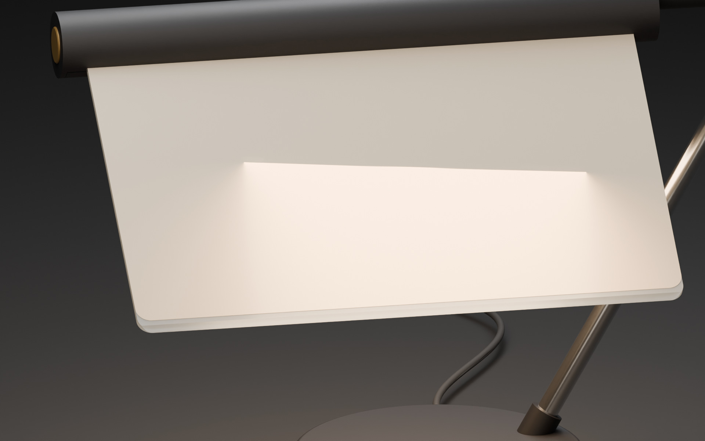
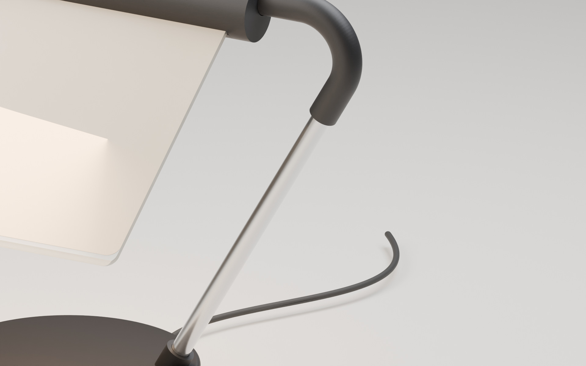
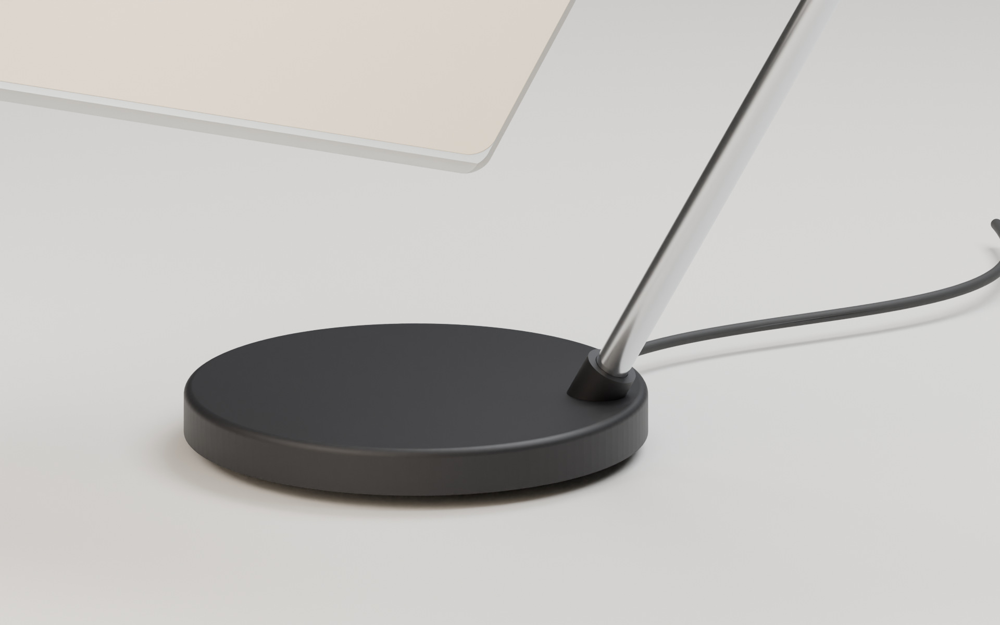
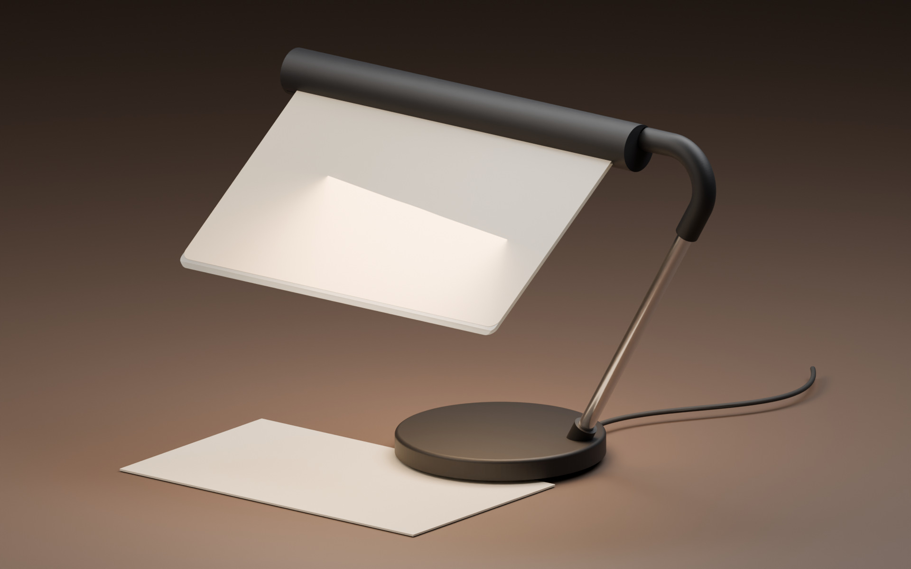
FINISH STUDIES
One silhouette. Different atmospheres.
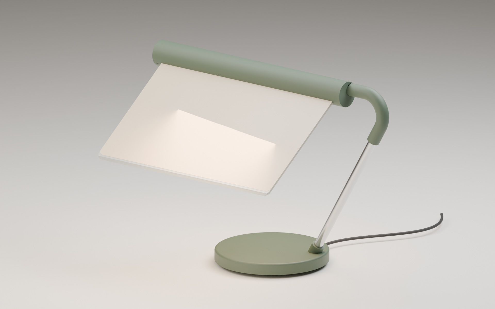
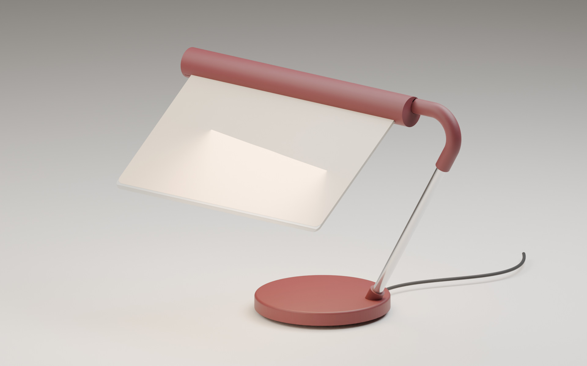
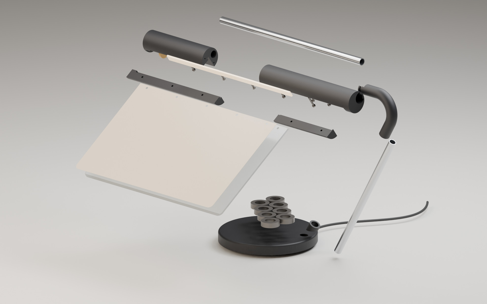